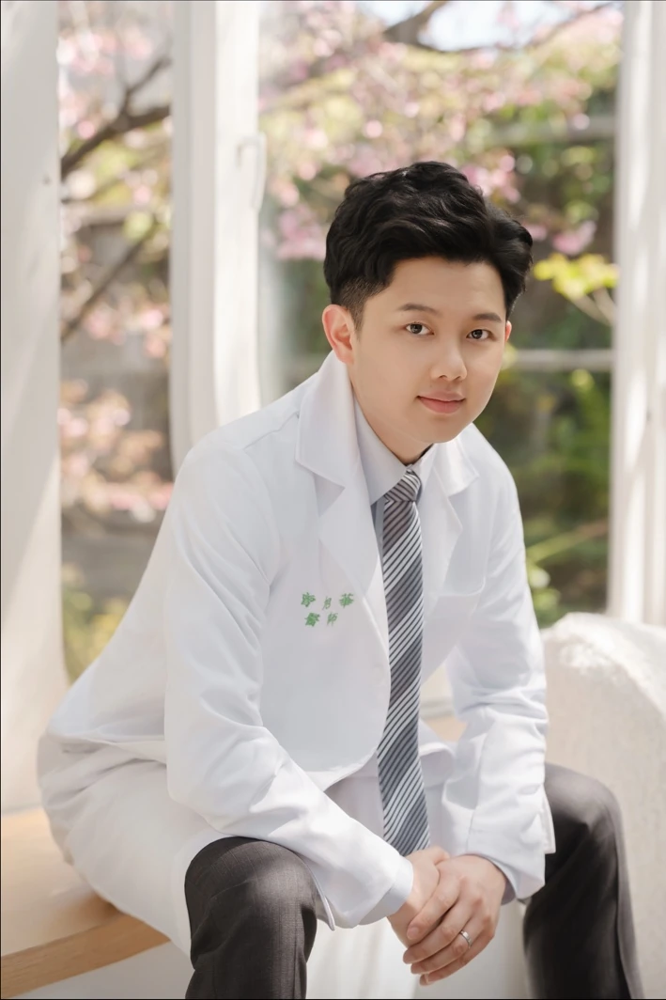

Hsu-Hua Tseng, MD
Academic profile
Attending Physician
Department of Internal Medicine
National Taiwan University Hospital
National Taiwan University Cancer Center
Clinical Lecturer
National Taiwan University College of Medicine

Digestive Endoscopy
Education
2018
Doctor of Medicine (MD)National Taiwan University College of MedicineClinical Training
2023–2025
Gastroenterology and Hepatology FellowshipNational Taiwan University Hospital2020–2023
Internal Medicine ResidencyNational Taiwan University Hospital2019–2020
Postgraduate Year (PGY) TrainingNational Taiwan University HospitalInternational Experience
2025
Research VisitStanford University2017
Clinical ElectiveThe University of Texas MD Anderson Cancer Center2017
Clinical ElectiveMemorial Hermann–Texas Medical Center2016
Clinical ElectiveKeio University Hospital2026
01
Review · First author
Current Opinion in Gastroenterology. 2026;42(5):319–324.
02
Editorial · First author
Digestive Diseases and Sciences. 2026;71(8):3266–3268.
03
Original research · Coauthor
Metabolic Optimization and Risk of Metachronous Advanced Colorectal Neoplasia in Patients With MASLD
JAMA Network Open. 2026;9(7):e2625715.
04
Case report · Coauthor
Annals of Hematology. 2026;105(4).
05
Systematic review · Coauthor
IgG4-Associated Autoimmune Hepatitis: a Systematic Review
Journal of Gastroenterology and Hepatology. 2026;41(2):443–453.
2025
06
Case report · Coauthor
Journal of the Formosan Medical Association. 2025;124(9):865–866.
07
Clinical image / technical report · Coauthor
Journal of Gastroenterology and Hepatology. 2025;40(7):1656–1658.
08
Original research · First author
Clinical Gastroenterology and Hepatology. 2025;23(4):644–652.e5.
2023
09
Original research · First author
A 20-year study of autoimmune polyendocrine syndrome type II and III in Taiwan
European Thyroid Journal. 2023;12(6):e230162.
2020
10
Case report · First author
Benzarone-induced liver injury: First case report in Asia
Journal of the Formosan Medical Association. 2020;119(9):1445–1447.
2026
Young Investigator Award, Second Place
Taiwan Digestive Disease Week (TDDW)
2026
Young Investigator Award
Seoul International Digestive Disease Symposium (SIDDS)
2026
Research Excellence Award (Team Category)National Taiwan University Hospital2025
Outstanding Resident Service Award
National Taiwan University Hospital
2024
Research Award (GI), First Place
Taiwan Digestive Disease Week (TDDW)